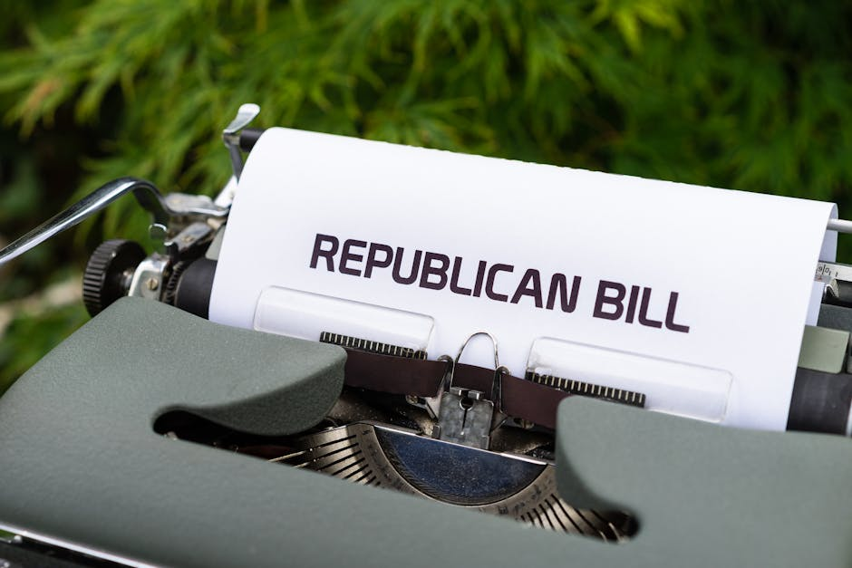
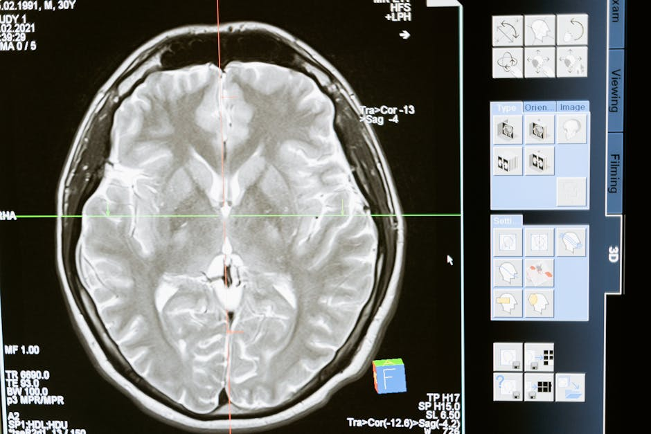
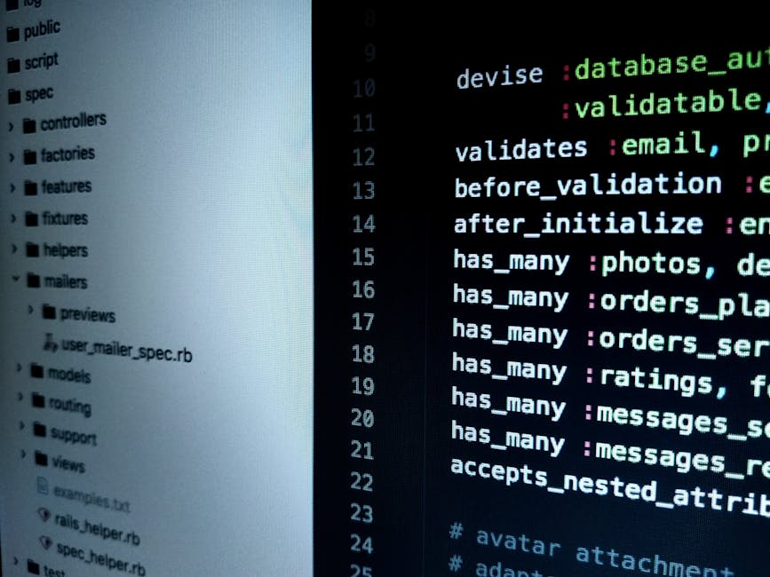
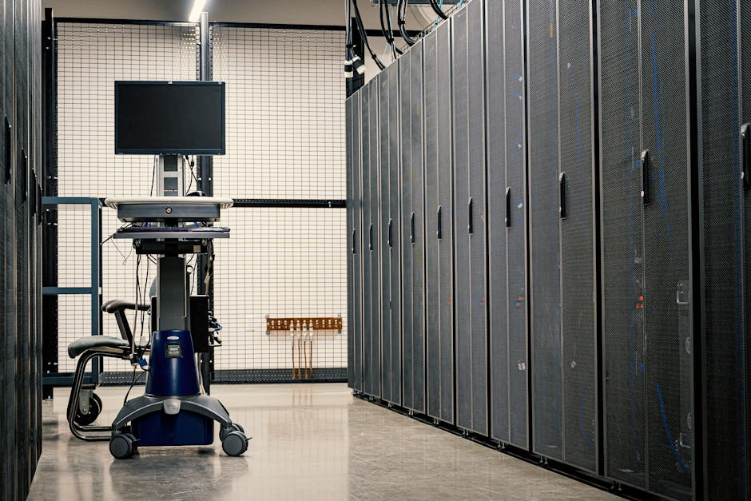

AI DAILY
AI 行业日报
2026-03-21 · 精选 10 条
01政策监管
Anthropic 反击五角大楼：提交宣誓声明，称"战时破坏模型"指控从未在谈判中出现
3月20日，Anthropic 向加州联邦法院提交两份宣誓声明，反驳五角大楼"该公司构成不可接受的国安风险"的说法。公司政策负责人 Sarah Heck 在声明中指出，Anthropic 从未要求对军事行动拥有审批权，"战时可能破坏或篡改模型"的指控也从未在谈判中被提出过，而是首次出现在政府的法庭文件中。
声明还披露了一个时间线矛盾：3月4日，就在五角大楼正式将 Anthropic 列入供应链风险名单的第二天，副部长 Emil Michael 发邮件称双方"接近达成一致"，并邀请 Anthropic 继续谈判。听证会定于3月24日在旧金山举行。
INSIGHT
法庭上说 Anthropic 威胁国安，私下却发邮件说"快谈成了"。Anthropic 把这封邮件写进了宣誓声明，直接摊给法官看。3月24日开庭，旧金山联邦法院。
02政策监管
特朗普发布 AI 立法框架：联邦统一监管，各州 AI 法规面临被废

白宫3月20日公布 AI 立法框架，提出7项核心目标，核心思路是建立"最低限度负担的联邦标准"，同时用联邦法律抢占各州 AI 立法权。声明直言"拼凑式的州法律会破坏美国创新能力和全球 AI 竞赛中的领先地位"。
在儿童安全方面，框架要求 AI 公司实施"降低未成年人性剥削和伤害风险"的功能，但没有列出任何可执行的硬性要求，大量责任被转嫁给家长。框架由白宫 AI 事务主管、风投人 David Sacks 主导推动，延续了"加速派"的轻监管路线。
INSIGHT
联邦想统一规则，各州已经跑了一年多了。加州、科罗拉多的 AI 法案都进了立法程序，现在要废掉它们，光靠一份框架不够，得走国会。真正落地的速度，大概率比各州出新法的速度慢。
03融资收购
AI 创业公司占风投总额 41%，OpenAI 上月融 1100 亿逼近万亿估值
据 Carta 数据，2025 年 AI 创业公司拿走了平台上 1280 亿美元风投总额的 41%，创历史新高。其中 10% 的公司拿走了一半的钱。头部集中度极高：xAI 1月融了 200 亿 Series E，OpenAI 2月拿下 1100 亿美元融资（史上最大私募轮之一），Anthropic 上月以 3800 亿估值完成 300 亿 Series G。
Carta 的数据还显示，2023-2024 年成立的基金 IRR（内部收益率）最高，跑赢了 2017-2020 年间成立的基金。不过 Carta 也提醒，新基金的高 IRR 可能有"纸面收益"成分——种子轮投了，公司 A 轮估值涨了，账面回报就很好看，但还没真正退出。
INSIGHT
三家公司，一个月，融走全球风投的大半。Carta 自己也加了个括号：IRR 好看，是因为还没退出。种子轮投进去，A 轮估值翻了，账面回报就上去了。真金白银？还没见到。
04行业动态
孙正义放话：单个项目砸 5000 亿美元，在俄亥俄建巨型 AI 数据中心
软银集团 CEO 孙正义宣布计划在美国俄亥俄州建设规模空前的 AI 数据中心基础设施项目，单项投资 5000 亿美元。这是目前已公开的全球最大单体数据中心投资计划。
同一天，贝索斯旗下 Blue Origin 也公布了"日出计划"（Project Sunrise），计划发射超过 5 万颗卫星在轨道上建太空数据中心，执行高能计算任务。算力军备竞赛已经从地面延伸到了太空。
INSIGHT
5000 亿美元是什么概念？大约相当于越南一年的 GDP。孙正义过去投 WeWork 烧了几百亿都被骂惨了，这次直接加了三个零。但问题不是钱够不够，是电够不够——俄亥俄的电网能不能撑住这种体量的算力中心。
05产品发布
Mistral 发布 Small 4：推理+视觉+代码三合一，1190 亿参数只激活 60 亿
法国 AI 公司 Mistral 发布开源模型 Small 4，采用 MoE 架构，总参数 1190 亿，每个 token 只激活 60 亿参数。它把 Magistral 的推理能力、Pixtral 的多模态理解、Devstral 的编程能力整合到了一个模型里，支持 256K 上下文窗口，Apache 2.0 开源协议。
Small 4 引入了 reasoning_effort 参数，用户可以动态调节模型推理深度：轻量响应走快速模式，复杂任务走深度推理。运行硬件门槛也不高，推荐配置是 4 张 H100 或 2 台 DGX B200。Mistral 称其输出更短，推理成本比同级模型低。
INSIGHT
1190 亿参数的模型只激活 60 亿，这个 MoE 比例够激进的。reasoning_effort 参数让企业能在速度和深度之间自己拉滑块，这对控制推理成本很实用。但 Mistral 的老问题还在——技术不差，品牌认知度远不如 OpenAI 和 Anthropic。
06行业动态
OpenAI 押注"全自动 AI 研究员"：9月出实习生版，2028 年出完全体
MIT Technology Review 独家报道，OpenAI 首席科学家 Jakub Pachocki 透露公司正全力押注新目标：打造全自动 AI 研究员。计划分两步走——2026 年 9 月推出"自主 AI 研究实习生"，能独立处理特定研究问题；2028 年推出完全自主的多 Agent 研究系统，能处理人类难以应对的大型复杂科研问题。
Pachocki 表示"我们正接近一个节点，模型能像人一样无限期连贯地工作"。该项目整合了推理模型、Agent 系统和可解释性三条研究线。OpenAI 今年 1 月发布的 Codex——能自动写代码执行任务的 Agent 应用——被视为这一愿景的早期原型。
INSIGHT
"数据中心里的整个研究实验室"，Pachocki 这话说得很满。9 月的"实习生版"是个很好的验证节点，到时候能看出来它到底是能独立干活的研究助理，还是个需要不停纠错的代码生成器。
07产品发布
微软认怂：砍 Copilot 入口、任务栏终于能移、强制更新可以跳过了

Windows 负责人 Pavan Davuluri 发布博客，公布 Windows 11 大修计划。第一批改动包括：任务栏可以移到顶部或侧边（等了近 5 年）、削减截图工具/照片/记事本等应用里的"不必要的 Copilot 入口"、减少自动重启和更新弹窗、允许在初始设置时跳过系统更新。
更大的改动将在今年晚些时候推出：优化整体系统性能、降低 Windows 底层内存占用（为 8GB 设备让路）、加快文件管理器启动速度、把更多核心组件迁移到 WinUI3。微软还计划推出"无限期暂停更新"功能，结束自 2015 年以来的强制更新政策。
INSIGHT
任务栏移位置，用户喊了快五年。微软今天才动手。内存占用也要降，因为苹果 MacBook Neo 拿 8GB 把基础款打到了 599 美元，OEM 厂商急了。砍 Copilot 入口这事，Reddit 上有人说"终于不用每次右键都看到 AI 了"。
08技术突破
全球首个：中国批准脑机接口芯片商用，32 人已植入无副作用

中国国家药监局批准了 Neuracle Medical Technology 研发的脑机接口植入物 NEO 上市销售，适用于 19-60 岁因颈部或脊髓损伤导致瘫痪的患者。这是全球首个获批商用的脑机接口芯片。植入物约硬币大小，嵌入颅骨，8 个电极放置在运动皮层，将用户的运动意念转化为机械手套的动作。
据 Nature 报道，32 人已完成测试植入，未报告不良副作用。同期，中国还发布了脑机接口产业政策文件，提出 17 项措施、5 年内打造全球竞争力的 BCI 产业。相比之下，Neuralink 等公司仍处于临床试验阶段，尚未获得任何国家的商用许可。
INSIGHT
Neuralink 名气最大，但还在做临床试验，去年还出过电极移位。中国这边，32 个人装了，18 个月，没出事，直接批了。数据样本不算大，后续论文得跟上。不过谁先拿到商用许可，谁就先写行业标准，这个顺序很难翻。
09技术突破
Cursor 自研编程模型 Composer 2，性能超 Claude Opus 4.6，价格只有它的零头

AI 编程工具 Cursor 发布自研模型 Composer 2。在 Terminal-Bench 2.0 基准测试中，性能位于 GPT-5.4 和 Claude Opus 4.6 之间。标准版定价输入 $0.5/百万 tokens、输出 $2.5/百万 tokens，相比 Opus 4.6 价格只有零头。快速版 Composer 2 Fast 输入 $1.5、输出 $7.5，速度更快。
核心技术是一种叫"自我总结强化学习"的方法：模型在长任务中主动停下来给自己写阶段总结，把 10 万+ tokens 的上下文压缩到 1000 个，压缩错误率比传统方法降低约 50%。实测中，Composer 2 经过 170 轮交互成功完成了"在 MIPS 架构上跑 Doom"这种极限任务。Cursor 已经在放 Composer 3 的消息了。
INSIGHT
Cursor 最早就是套了层壳调 Claude。现在自己训的模型，跑分比 Claude 还高。CEO 自己说了："我们现在既是应用又是模型商。"Composer 3 已经在路上了。从搬运到反超，用了不到两年。
10市场数据
AI 烧得越猛，云计算越贵：国内外云厂商集体涨价，部分产品涨幅超 30%

近 20 年只降不升的云计算行业破例了。3月18日，阿里云宣布平头哥算力卡产品涨 5%-34%，文件存储涨 30%；同天百度智能云跟进，AI 算力涨 5%-30%。更早之前，腾讯云已对混元模型涨价，部分产品涨幅 400%。海外更早动手——AWS 1月对大模型训练实例涨 15%，谷歌云 AI 基础设施最高涨 100%。
涨价背后是 AI Agent 爆发带来的 Token 消耗暴增。据报道，OpenClaw 等智能体单任务 Token 消耗量是普通对话的几十到上百倍。阿里云百炼 1-3 月创历史最高增速，腾讯混元单月调用量暴涨 4 倍。IDC 预测到 2030 年全球年度 Token 消耗量将增长超 3 亿倍。存储芯片也在涨——2026 Q1 DRAM 合约价环比涨 90%-95%，三星 NAND 涨超 100%。
INSIGHT
腾讯财报会上原话：产能早被预订光了，供应商优先大客户。云计算这行低利润跑了快二十年，需求一回来，涨价是唯一选项。阿里云内部的人说，百炼这三个月的增速，他们自己都没预料到。
由 Zayen知览 整理 · 构建者视角